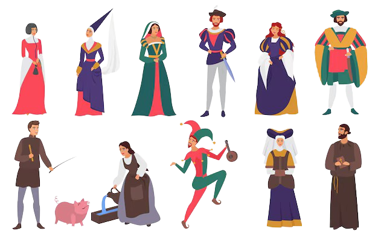

Nel 1084 signore di Affile era Ildemondo, capostipite della famiglia del futuro papa
Alessandro IV. Nel 1109 il papa in persona, Pasquale II, venne a sottrarre
Affile dalle mani di Ildemondo per consegnare il castello all'abate in cambio di una somma di denaro.
Il racconto della presa del castello riportatoci dai cronisti medioevali è molto drammatico: al sopraggiungere
del grande esercito guidato dal papa e dall'abate, Ildemondo, che si trovava ad Affile, preferì rifugiarsi con
la sua famiglia nella vicina Ponza (ora Arcinazzo Romano) che offriva maggiori garanzie di sicurezza.
Partito il suo signore, Affile, dopo un breve combattimento sotto le mura, si arrese: l'abate, che in un primo
momento aveva deciso di distruggerne le mura, rinunciò al proposito rispettando gli abitanti ed i loro beni,
anche perché a quel tempo le case stesse erano appoggiate alle mura di cinta, e quindi non si potevano
distruggere le mura senza distruggere in buona parte anche l'abitato e questo, sicuramente, non conveniva
all'abate.
Ildemondo riuscì ugualmente a conservare il suo potere e, nonostante la resa di fronte al papa e all'abate,
ottenne il feudo dall'abate sia del castello di Affile che quello di Ponza. La potenza della famiglia di
Ildemondo crebbe con i suoi discendenti, contro i quali gli abati dovettero lottare aspramente per riprendere il
controllo di Affile.
Ildemondo non fu l'unico affilano rimasto nella storia, ce ne sono anche altri. Li conoscete? Una breve
descrizione vi permetterà di ricordarveli.
P.S.: trattandosi di persone queste hanno nome e cognome (di alcune abbiamo però trovato solo il nome), per
cui inserite la generalità in modo corretto. Inoltre attenzione ad alcune figure clericali: di queste vogliamo
anche il titolo (es.: Padre, Don, Monsignor). Ora l'handicap sarà di 3 minuti (e dopo 5 tentativi saranno segnate le risposte corrette e sbagliate).

Fu ambasciatore presso i pretori e i consoli romani. Un'altra figura così importante da meritare un monumento...
Personaggio tra i più controversi e discussi, sia nel bene che nel male (soprattutto nel male), fu uno dei
principali attori degli eventi turbolenti che segnarono circa cinquant’anni di storia italiana…
Visse nel XV secolo e fu uno dei più famosi "capitani di ventura" dell'epoca; condottiero rinomato e valoroso,
comandò eserciti mercenari al soldo dei principi dell'epoca, per lo più stranieri. Lo scenario delle sue imprese
fu l'Ungheria, dove si sposò e concluse la sua vita.
Storico sindaco del nostro Comune, per oltre quarant'anni ha rivestito la prestigiosa carica tra le fila del
Movimento Sociale Italiano.
Pittore vissuto a cavallo tra il XV e il XVI secolo fu senza dubbio un artista degno di nota, poiché l'abate del
monastero di Subiaco, nonostante la giovane età, affidò a lui, anziché a pittori della capitale, la decorazione
delle sale della fortezza dell'Abbazia di Subiaco. Solo la sua prematura scomparsa, durante il pontificato di
Clemente VII de' Medici (1523-1534), cancellò la sua stimata immagine di pittore di scene successive di grande
rilievo; resta tuttavia il fatto che la sua pennellata lasciò il segno nell'arte figurativa del periodo.
Proveniente da una famiglia di rinomati medici, fu discepolo di Raffaele Bastianelli, che affiancò in qualità di
ufficiale sanitario presso l’Ambulanza Chirurgica della Terza Armata durante la Prima Guerra Mondiale, periodo in
cui maturò una significativa esperienza nella chirurgia addominale da campo.
Nato in una famiglia di scrittori nei secoli XVI e XVII, fu pittore, scrittore e poeta; amò molto il suo paese e
per esso realizzò numerose opere...
Religioso degli Scolopi, docente di materie umanistiche a Firenze, intellettuale e oratore di grande fama,
riconosciuto nel mondo accademico.
Arciprete di Affile per circa 40 anni; fondò la Cassa Rurale, l'Asilo infantile e l'Orfanotrofio "Teresa
Puccinelli Felici".
Monaco benedettino, insegnò teologia liturgica presso le università Lateranense e Gregoriana ed è stato un
eminente autore di testi spirituali.
Figura particolarmente illustre della colonia romana di Affile; probabilmente fu console romano. Per i suoi
grandi servigi, ricevette un monumento tutt'oggi visibile.
Docente di chirurgia clinica presso l'università di Roma. Fu il primo a provare a rimuovere il mascellare
inferiore. Venne accolto nelle più importanti accademie europee.
Fu valoroso pilota di caccia, aerosiluranti e bombardieri nei cieli della Seconda Guerra Mondiale. Distintosi per
straordinario coraggio e spirito di sacrificio, gli fu conferita la Medaglia d’Oro al Valor Militare, simbolo
imperituro del suo eroismo.
Fu Vicario generale della Diocesi di Palestrina.
Famoso e geniale costruttore di organi la cui opera fu fonte di gloria imperitura per il nome di Affile; egli
operò principalmente nelle chiese e nelle cattedrali dell'Italia centromeridionale...
Uomo di lettere attivo alla fine del Cinquecento, ricoprì il ruolo di segretario e consigliere personale del
cardinale Marc’Antonio Colonna.